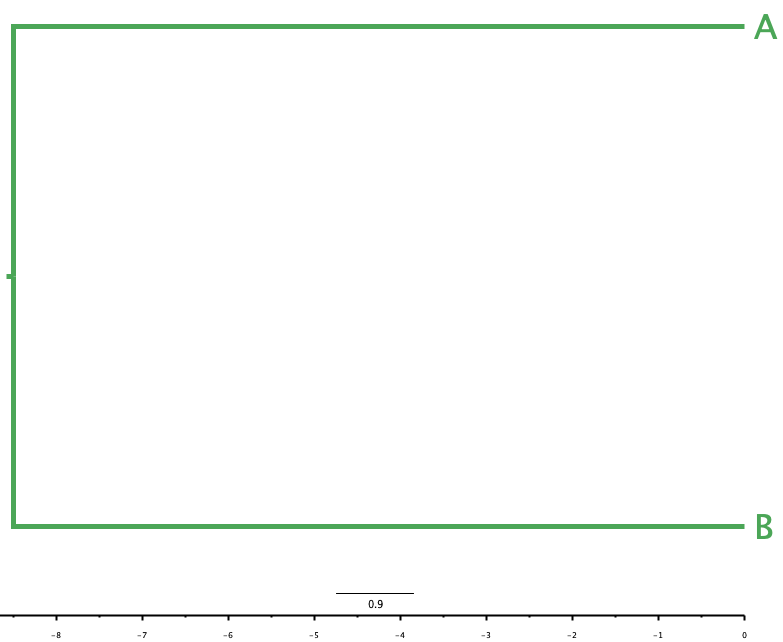
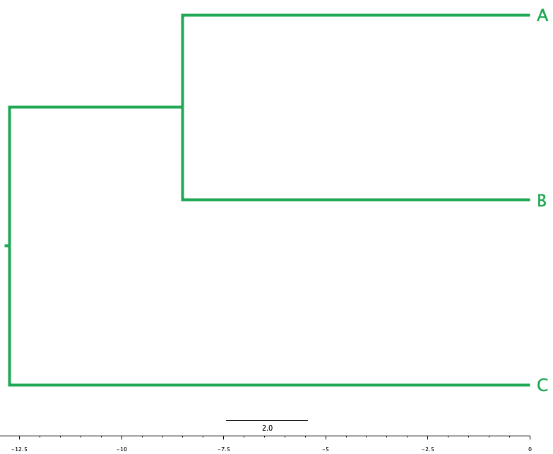
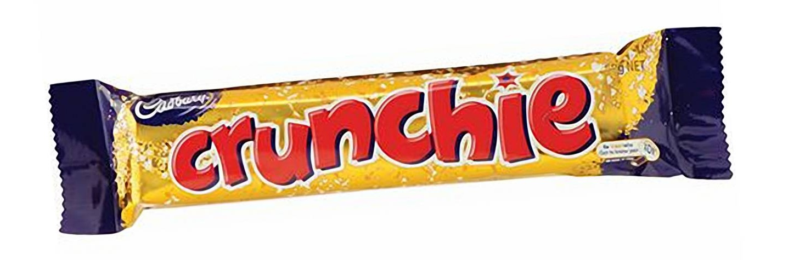
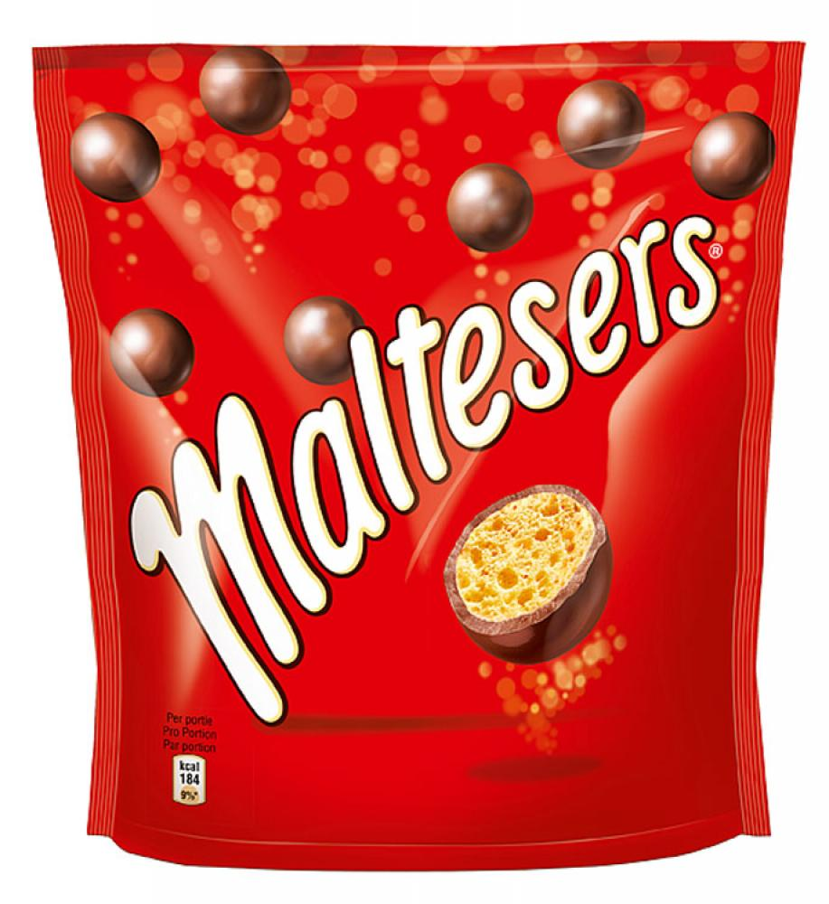
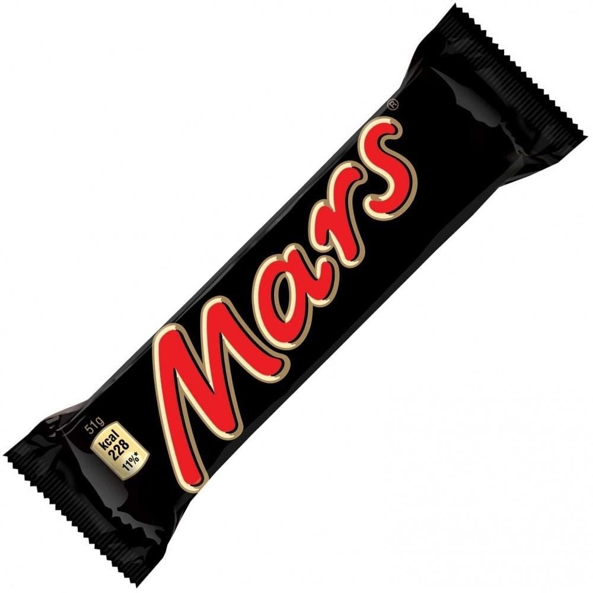
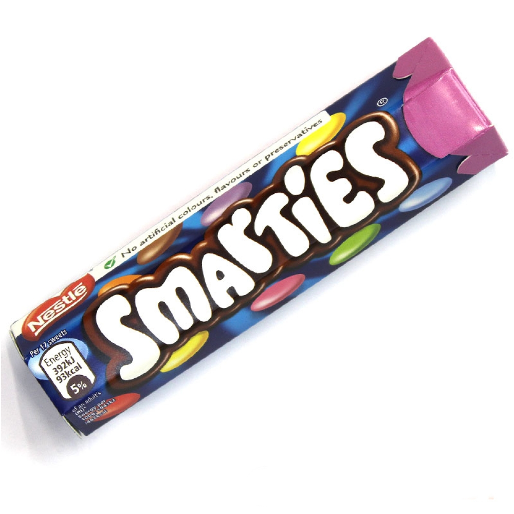
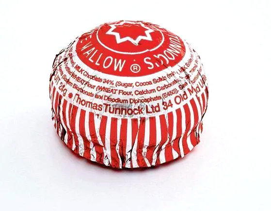
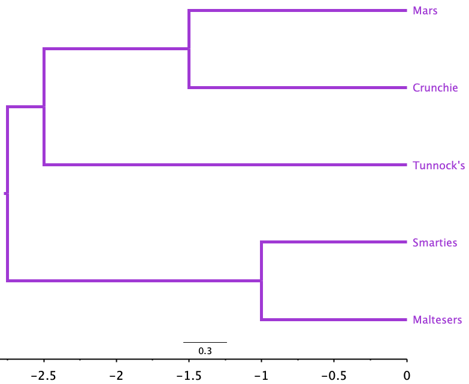

| A | B | C | |
|---|---|---|---|
| A | 0 | 17 | 21 |
| B | 17 | 0 | 30 |
| C | 21 | 30 | 0 |
2 UPGMA
UPGMA stands for Unweighted Pair Group Method with Arithmetic mean. It is a simple hierarchical clustering method that can be used to produce a rooted dendrogram. This dendrogram represents the structure (clustering) of relationships in a dataset.
When the dataset represents evolutionary distances, UPGMA can be used to produce an evolutionary tree.
The basic idea behind UPGMA
The UPGMA algorithm is fairly strightforward. We start with a group of objects (or organisms) that are dissimilar in some ways that we can measure.
- The first step is to calculate a measure of difference (a distance) between each pair of objects. We combine these into a matrix of distances. Suppose the difference between \(A\) and \(B\) is 17, the difference between \(A\) and \(C\) is 21, and that between \(B\) and \(C\) is 30, the matrix would look like this:
We would start by joining the two most similar objects together. Here these are \(A\) and \(B\), as the distance between them is the shortest, at 17 units - so we join them together in the tree with a common ancestor halfway between them, at branch length \(\frac{17}{2} = 8.5\) units, as in Figure 2.1.
In the matrix, we bring \(A\) and \(B\) together as the new object \((A, B)\), replacing the individual rows and columns for \(A\) and \(B\) with a single row and column for \((A, B)\). But we don’t know how what the distance is between this new object and \(C\)!
| (A, B) | C | |
|---|---|---|
| (A, B) | 0 | ? |
| C | ? | 0 |
- The A in UPGMA tells us how to calculate this value, though: using the arithmetic mean. We take the distances between \(A\) and \(C\), and between \(B\) and \(C\), and find their artihmetic mean (i.e. add them and divide by two). Here, that is the average of \(21\) and \(30\), which is \(\frac{21 + 30}{2} = \frac{51}{2} = 25.5\), so the distance matrix now looks like this:
| (A, B) | C | |
|---|---|---|
| (A, B) | 0.0 | 25.5 |
| C | 25.5 | 0.0 |
- In the next round of UPGMA, we would join \((A, B)\) with \(C\) as a distance of 25.5 units, as this is the only connection left to make. The length of the branch from \(C\) to the common ancestor is \(\frac{25.5}{2} = 12.75\) units, so the distance from the join of \(A\) and \(B\) to that point is \(12.75 - 8.5 = 4.25\), and the tree looks like that in Figure 2.2:


The two stages of drawing the example tree: (a) the first join between \(A\) and \(B\); (b) the addition of \(C\).
- The final tree can be represented as \(((A, B), C)\): \(A\) and \(B\) lie within the inner parentheses, reflecting that they are more similar to each other than either is to \(C\).
For larger datasets, we keep repeating the process until we run out of rows and columns to combine
2.1 Let’s build a tree!
We’re going to build an evolutionary tree of chocolate!
It’s OK, we know that chocolate bars aren’t evolutionarily related.
UPGMA is a clustering algorithm that can be used for evolutionary analysis if the distance matrix describes an evolutionarily-relevant measure, like divergence time since last common ancestor.
When that’s not the case, it’s just clustering.





2.1.1 Making a distance matrix
It’s not very obvious how to measure the distances between different kinds of chocolate (other than to get a ruler out and see how far apart they are). This is true in the same way that it’s not obvious how to measure a distance between a cat and a dog, or a human and a whale, or a bacterium and a fungus.
One approach to defining distances, developed as part of an approach to reconstructing evolution called cladistics, is to define characters that the chocolate types either possess or do not possess. For example, a Mars Bar contains caramel, but a Bounty does not. A Dairy Milk bar is flat, but Smarties are not.
By defining a set of characters, we can make a table of properties that might be shared, or not, between all our chocolate bars: Table 2.1.
1 indicates character presence, 0 indicates its absence.
| Chocolate Bar | Drops? | Bar? | Candy shell | Chocolate | Peanut | Coconut | More than one element | Caramel | Wafer | Biscuit | Raisins | Honeycomb | Flat? | Nougat | Marshmallow |
|---|---|---|---|---|---|---|---|---|---|---|---|---|---|---|---|
| Smarties | 1 | 0 | 1 | 1 | 0 | 0 | 1 | 0 | 0 | 0 | 0 | 0 | 0 | 0 | 0 |
| Mars | 0 | 1 | 0 | 1 | 0 | 0 | 0 | 1 | 0 | 0 | 0 | 0 | 0 | 1 | 0 |
| Crunchie | 0 | 1 | 0 | 1 | 0 | 0 | 0 | 0 | 0 | 0 | 0 | 1 | 0 | 0 | 0 |
| Maltesers | 1 | 0 | 0 | 1 | 0 | 0 | 1 | 0 | 0 | 0 | 0 | 1 | 0 | 0 | 0 |
| Tunnock's Tea Cake | 0 | 0 | 0 | 1 | 0 | 0 | 0 | 0 | 0 | 1 | 0 | 0 | 0 | 0 | 1 |
But these aren’t themselves distances, so how can we get a distance from this kind of data?
Hamming Distance
One way we can calculate distances between rows of character tables like Table 2.1 is by using the Hamming distance. Here’s an example.
Suppose you have a table with two rows that look like Table 2.2
1) or absent (0).
| group | hyphae | chitin | cellulose | spores | legs |
|---|---|---|---|---|---|
| fungi | 1 | 1 | 0 | 1 | 0 |
| oomycete | 1 | 0 | 1 | 1 | 0 |
We can look along the rows and count up the number of columns that differ. hyphae, spores, and legs character values are the same for both fungi and oomycetes. But they differ in chitin and cellulose - two characters. So the Hamming Distance between fungi and oomycetes here is \(H = 2\).
We can calculate similar Hamming distances for each pair of chocolotes in Table 2.1, to produce the distance matrix in Table 2.3
| ...1 | Smarties | Mars | Crunchie | Maltesers | Tunnock's Tea Cake |
|---|---|---|---|---|---|
| Smarties | 0 | 6 | 5 | 2 | 5 |
| Mars | 6 | 0 | 3 | 6 | 5 |
| Crunchie | 5 | 3 | 0 | 3 | 4 |
| Maltesers | 2 | 6 | 3 | 0 | 5 |
| Tunnock's Tea Cake | 5 | 5 | 4 | 5 | 0 |
2.1.2 Applying UPGMA
As with the example in the drop-down box above, we start by identifying the most similar chocolates. Here, that is Maltesers and Smarties, with a distance of \(H=2\). We combine these into the group (Smarties, Maltesers), and note they have a branch length to their common ancestor of \(\frac{2}{2} = 1\).
Now we update the distance matrix. We need to calculate the arithmetic mean of the distances from Smarties and Maltesers to each other variety of chocolate. These distances are given in Table 2.4:
| Chocolate | H(Smarties) | H(Maltesers) | H((Smarties, Maltesers)) |
|---|---|---|---|
| Mars | 6 | 6 | \(\frac{6 + 6}{2} = 6\) |
| Crunchie | 5 | 3 | \(\frac{5 + 3}{2} = 4\) |
| Tunnocks | 5 | 5 | \(\frac{5 + 5}{2} = 5\) |
- Next we take out the individual Smarties and Maltesers rows and columns from the distance matrix, and replace them with a new row and column that reflects the combined (Smarties, Maltesers) ancestor distances from Table 2.4:
| ...1 | (Smarties, Maltesers) | (Mars, Crunchie) | Tunnock's Tea Cake |
|---|---|---|---|
| (Smarties, Maltesers) | 0 | 6 | 5 |
| (Mars, Crunchie) | 6 | 0 | 5 |
| Tunnock's Tea Cake | 5 | 5 | 0 |
Now the most closely-related pair of chocolatesin Table 2.5 is Mars and Crunchie, with Hamming distance \(H=3\), so they have a branch length to their common ancestor of \(\frac{3}{2} = 1.5\).
We update the distance matrix again. We calculate the arithmetic mean of the distances from Mars and Crunchie to the other chocolates:
| Chocolate | H(Mars) | H(Crunchie) | H((Mars, Crunchie)) |
|---|---|---|---|
| (Smarties, Maltesers) | 6 | 4 | \(\frac{6 + 4}{2} = 5\) |
| Tunnocks | 5 | 4 | \(\frac{5 + 4}{2} = 4.5\) |
- And once more we update the distance matrix to reflect the newly-calculated values for (Mars, Crunchie) in Table 2.6:
| ...1 | (Smarties, Maltesers) | (Mars, Crunchie) | Tunnock's Tea Cake |
|---|---|---|---|
| (Smarties, Maltesers) | 0 | 6 | 5 |
| (Mars, Crunchie) | 6 | 0 | 5 |
| Tunnock's Tea Cake | 5 | 5 | 0 |
Now the most similar pair of chocolates in Table 2.7 is (Mars, Crunchie) and Tunnock’s, with a Hamming distance of 5 (so a branch length to their common ancestor of $ = 2.5). They come together to make the new group ((Mars, Crunchie), Tunnock’s)
Once more we update the distance matrix We calculate the arithmetic mean of the distances from (Mars, Crunchie) and Tunnock’s to (Smarties, Maltesers):
| Chocolate | H((Mars, Crunchie)) | H(Tunnock’s) | H(((Mars, Crunchie), Tunnock’s)) |
|---|---|---|---|
| (Smarties, Maltesers) | 6 | 5 | \(\frac{6 + 5}{2} = 5.5\) |
- And now we update the distance matrix to reflect the newly-calculated values for (Mars, Crunchie) in Table 2.8:
| ...1 | (Smarties, Maltesers) | ((Mars, Crunchie), Tunnock's) |
|---|---|---|
| (Smarties, Maltesers) | 0.0 | 5.5 |
| ((Mars, Crunchie), Tunnock's) | 5.5 | 0.0 |
- The last step now is to note that ((Mars, Crunchie), Tunnock’s) connects to (Smarties, Maltesers) at a distance of 5.5, so the branch length to each from their common ancestor is \(\frac{5.5}{2} = 2.75\).

Interpreting the tree
Figure 2.4 shows what we might have guessed from the distance matrix.
- Smarties and Maltesers are more similar to each other than they are to the other chocolates. This makes sense as both are packets of small elements, not bars.
- The Mars and Crunchie bars, being bars, are more similar to each other than they are to any of the other chocolates, which are not bars.
- The Tunnock’s Tea Cake is unlike all the other chocolates (it is the deepest-branching chocolate), and probably groups with the Mars Bar and Crunchie because you only get one in a wrapper.